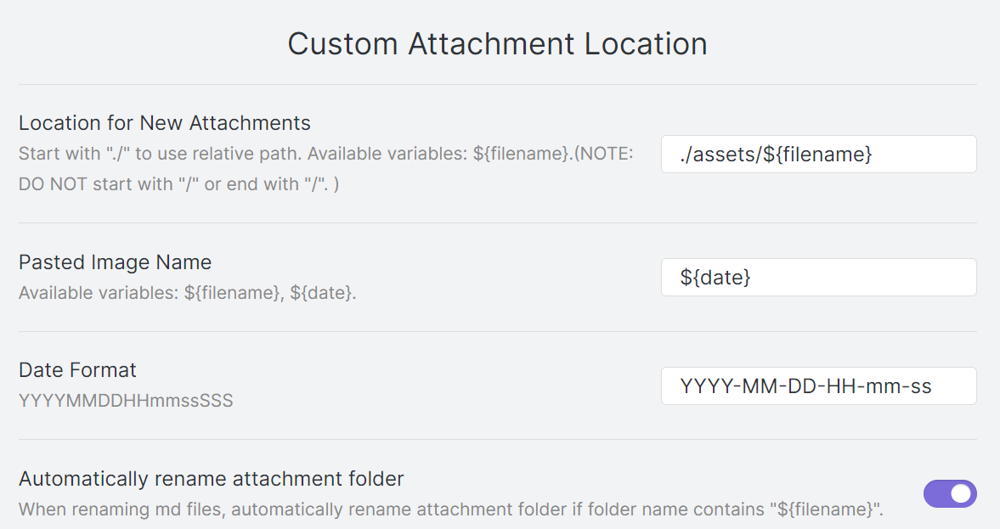
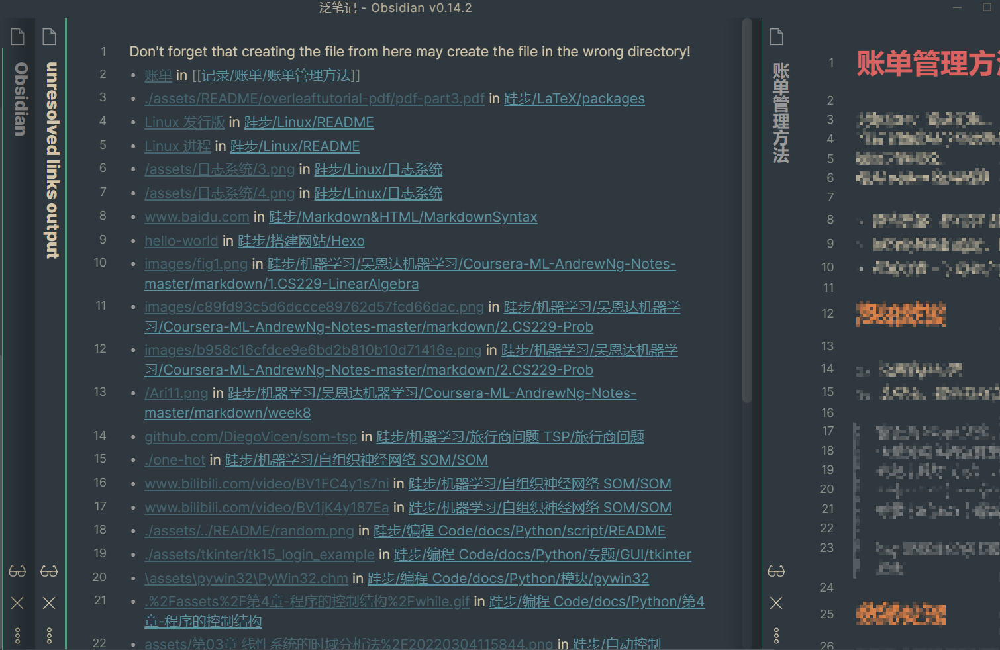
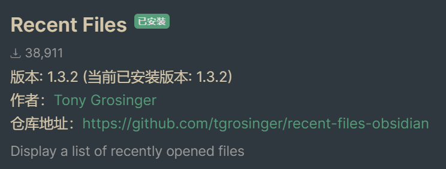
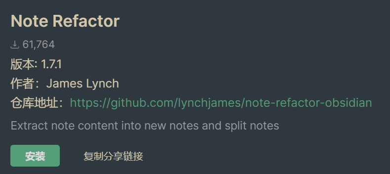
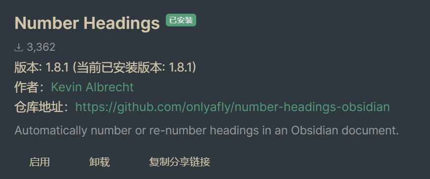
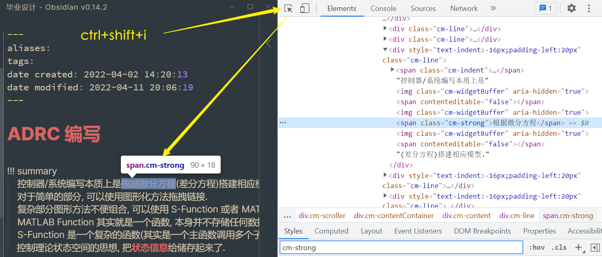

Obsidian¶
1 Why Obsidian¶
一个简单对比
| obsidian | vscode |
|---|---|
| 专注于 markdown 笔记, 有很多笔记相关的插件,有实时阅览 | 专注代码编辑,文本输入更舒适 |
| 速度快,每个库的插件是独立的 | 速度慢, 插件全局安装,可以为工作区单独配置 |
我觉得当然可以结合着使用… 只能说各有侧重吧. 喜欢 markdown 的我也不想把篮子都放在一个框里,所以从语法层面上不会使用只有 obsidian 支持的语法. (mkdocs 可以生成 html, 所以使用一些也没关系…)
其实归根结底好不好用, 还是看有没有好用的插件…
2 软件配置¶
Obsidian 的每一个库文件夹下都有 .obsidian, 包括所有配置信息以及安装的插件.
每个库都有独立的插件和主题, 所以每新增加一个库就得重新配置一遍. 或者干脆把 .obsidian 移动到相应的位置, 那么所有的设置,主题,插件都会被复制过去.
Obsidian 本身需要修改的几个关键配置: (根据我的使用习惯)
- 使用制表符 → off 禁止 Tab 符号
- 拼写检查 English (中文不支持)
- 内部链接类型 → 插入基于当前笔记的相对路径
- 使用 Wiki 链接 → off
2.1 基础配置插件¶
插件是在 github 上的, 可能得挂加速器.
插件.md · 宏沉一笑/obsidian-plugin - Gitee.com
obsidian-linter/rules.md at master · platers/obsidian-linter
- 文本格式化, 例如调整空行之类的
obsidian-linter/rules.md at master · platers/obsidian-linter 参考这个页面设置自己需要的就可以了. - 可以自动添加 Front matter. timestamp 默认的格式是
dddd, MMMM Do YYYY, h: mm: ss a看着不习惯, 可以调整成YYYY-MM-DD HH: mm: ss就是2018-10-28 22:54:43.
Moment.js | Docs
Pangu
中英文添加空格.
但是这个并不会转化中英文标点.
Custom Attachment location
RainCat1998/obsidian-custom-attachment-location: Customize attachment location with variables($filename, $data, etc) like typora.
使用这个插件是因为我的习惯(一直用 vscode 的配置)是把图片放到
assets/${filename}文件夹下
- 它可以自定义路径, 图片名, 甚至更改文件名可以自动更新链接!
- 有空格会自动加
%20
参考配置

Show Whitespace
方便看有几个空格, 这样缩进好调整. 但是好像不太好用
Show whitespace in editor - Feature requests - Obsidian Forum
Show whitespace plugin - Share & showcase - Obsidian Forum
总之这个问题没被很好地解决 #todo
2.2 其他配置性插件¶
Consistent attachments and links
会把文件引用的文件都放到规范的位置 (例如 assets 子文件夹内);
会保证文件里的链接都是标准 markdown 格式的(). 而wikilink等obsidian支持的格式都会被转化成标准格式;
另外移动 markdown 文件, 也会自动移动其资源文件到相应位置.
这个思想就是保持 markdown 文件的通用性, 挺好的, 但是我选择自己去维护这种 consistency…
Obsidian Git 可以使用 git, 但是想了想还是使用 VScode 吧…
2.3 其他¶
有一些插件会生成文件, 要使用的话最好配置一下文件位置, 避免把文件夹搞得很乱. 比如日记的文件位置, kanban 的位置
3 插件¶
3.1 Mess¶
obsidian-checklist-plugin - 清单检查
liamcain/obsidian-calendar-plugin: Simple calendar widget for Obsidian.
OfficerHalf/obsidian-collapse-all
kanban 可以用来规划之类的…
deathau/sliding-panes-obsidian: Andy Matuschak Mode as a plugin
最后效果大概是这样子的, 从左到右一层层点开链接, 很方便. (发现似乎得按住ctrl点链接). 下面有滚动条.

Vinzent03/find-unlinked-files: Find files, which are nowhere linked, so they are maybe lost in your vault.
这个插件(对于我)主要是用来找到那些失效的链接. 可能是由于不规范, 或者文件已经被移动到别的位置了.
3.2 Regex Pipeline¶
这个插件可以自定义一些替换规则, 感觉挺有意思的, 但是我没有试.
例如你可以自动进行这样的替换 ![] --> ![alt]
Regex Pipeline guideline.md

3.3 Recent Files¶

3.4 Note Refactor¶
通过标题拆分文件.
在新写一篇笔记时，出于方便我都把所有内容写在一篇笔记里，如果写到后面发现内容太多，想拆分为多篇笔记时，这时笔记内容已经很庞大，手动将一段段内容剪切出去非常麻烦，这时可以通过 Note Refactor 一键将一篇笔记通过标题进行拆分。

3.5 Number Headings¶
自动给标题加序号.

安装好后，需要设置:
Skip top Heading LevelAutomatic Numbering
然后就会自动给当前打开的文件的标题进行标号， 默认是 1.1.2 这样的格式
4 自定义 CSS¶
简单元素的修改: ctrl+shift+I 调出开发者工具, 之后选中自己想修改的元素, 找到其类名. 然后自己添加 css 代码.

例如上面确定粗体对应的类是 .cm-strong, 在外观-css代码片段 部分添加如下样式, 粗体颜色就被改变了.
.cm-strong
{
color: #da6362
}
- 修改文本, 预览样式同步修改
- 阅读视图, 实时阅览的样式是分开的…
5 Tips & Furthermore¶
我觉得 Obsidian 的链接有点搞不懂… 有时候链接找不到你一点会自动帮你创建对应的文件.
另外缩进也不容易看清楚.
所以建议用 Obsidian 进行笔记的书写, vscode + git 确保没有出错.